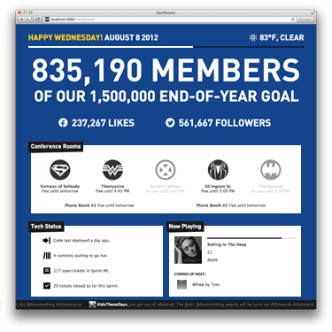

DoSomething.org Dashboard
While interning at DoSomething.org, I found that similar questions popped up all the time: What meeting rooms are free? When was code last deployed? Will I need an umbrella to pick up lunch? What is that song playing on the other side of the office?
With some inspiration, I set out to fix this. After proposing the project to my supervisor, I was given time to bring my vision to reality over the following weeks.
Dashboard provides an at-a-glance view of total members, live Twitter mentions, the weather outside, conference room availability (through Google Calendar), tech status (through Github and Redmine), and — this is pretty awesome — an office jukebox powered by Rdio.
Dashboard was built in Node.js, and uses Socket.io to push instant updates to connected clients without requiring a browser refresh.
June — August 2012